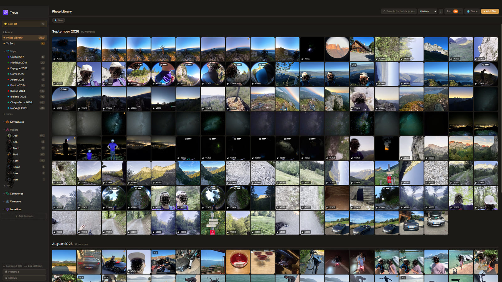
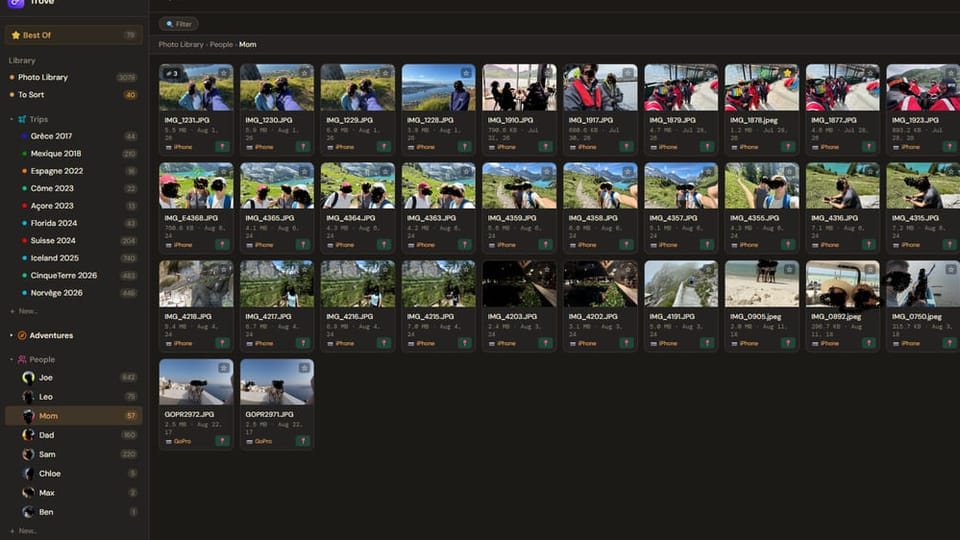
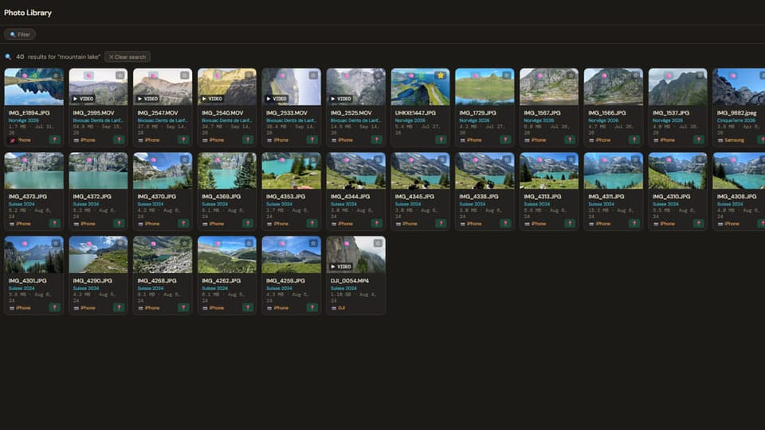
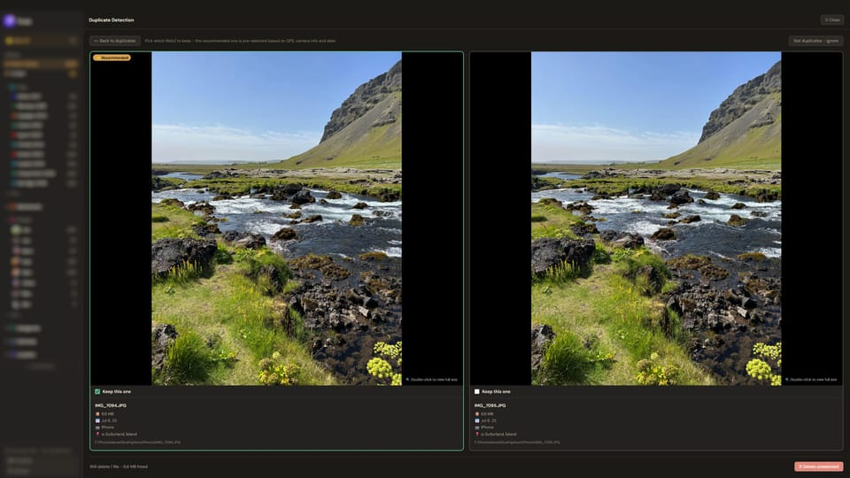
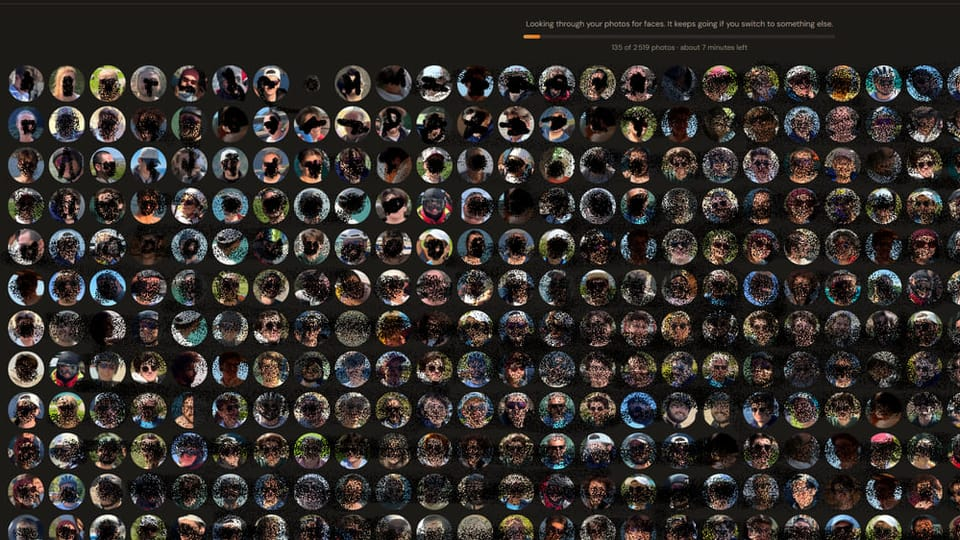
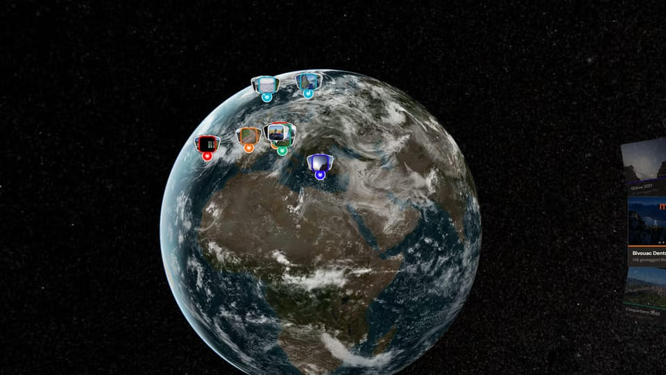
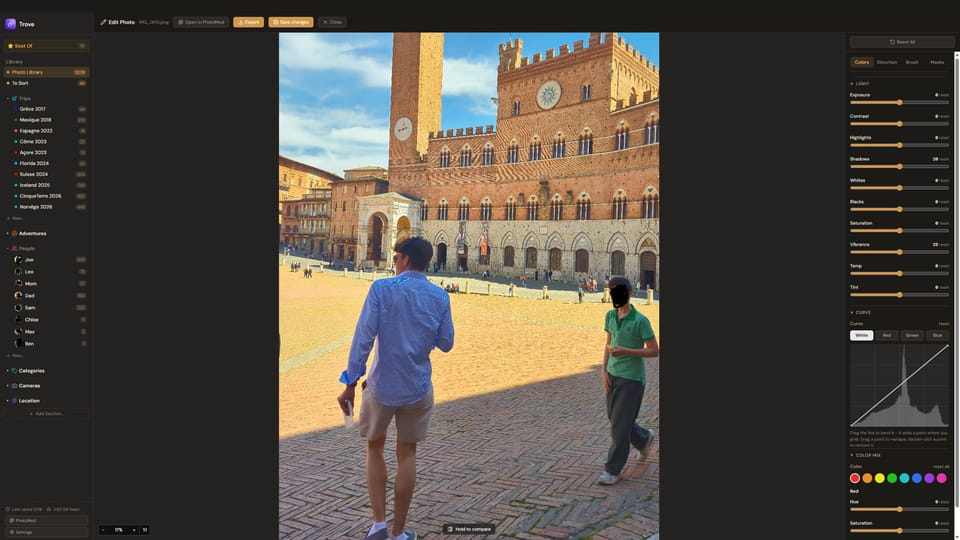
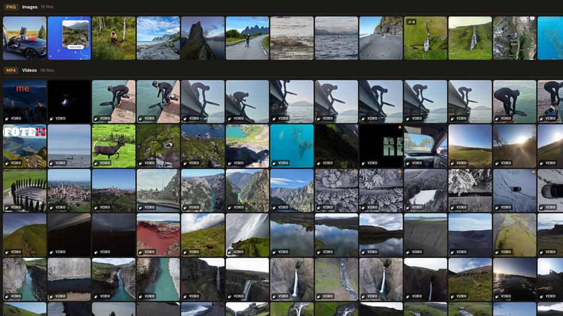

Make watching your photos fun again
Stop wasting your time scrolling through other people's stories. Scroll through yours.

Trove lets the same files live in as many folders as you want, without copying anything. Find any file by camera, person, place or date, and relive your trips.
Preview, edit and watch it all in one app. Free for Windows and Mac. Your files never move.
Folders your way
Many foldersNo copiesPut the same photo in as many folders as you like: a trip, a person, a camera, a place. Nothing is copied or moved.
- One file, many folders
- Trips, people, cameras and locations
- Your files never move

Search by what's in the photo
“mountain lake”Works offlineType "mountain lake" or "dog on a hike" and Trove finds it, even if the file is called IMG_4021.heic.
- Runs entirely on your computer
- No photo or search is sent anywhere
- Results found by content get a badge

Clean up your library
Guided SortDuplicatesEdited copiesThree tools that clear out a messy library. Guided Sort walks your To Sort pile one cluster at a time, Find duplicates catches visual copies even after a resize or a rename, and Find edited links each edit back to its untouched original.
- Guided Sort: one question per cluster, not per photo
- Find duplicates: every group shown side by side
- Find edited: an Original badge on every linked edit

Faces, kept private
OptionalOn your computerOptional face recognition gives everyone a folder with a real photo of their face.
- Off until you turn it on
- Runs on your computer
- Turning it off deletes the face data

Your trips on a 3D globe
Day by dayStreet levelEvery geotagged photo lands on a real-terrain globe. Open a trip and step through it day by day.
- Zoom down to street level
- Relive Trip walks through each day

A photo editor, built in
Non-destructiveSmart eraserQuick non-destructive edits from your library, and PhotoMod, a layer-based editor, for bigger jobs.
- Your original is never overwritten
- Smart eraser removes what you don't want
- Auto select picks whole objects in one click

Stop scrolling others. Scroll yours.
Easy sortingPhotos and videosSwipe to binStop scrolling other people's content and scroll your own. Flick through a trip full screen, one photo or video at a time, and sort as you go. It is the easiest way to sort your photos and videos.
- Scroll to move on, double-click to like
- Swipe sideways to send a file to the Bin
- Photos and videos, one decision at a time
Almost every format
HEICRAW360VideoAround 70 photo and video formats, including the ones most organizers skip.
- HEIC, plus RAW from Canon, Nikon, Sony and more
- MP4, MOV, MKV and 360 camera files
- Your files stay exactly where they are

Your photos stay yours
No cloudOpen sourceFreeTrove never copies, moves or uploads a file. It keeps organized links to the originals, right where they already are.
- No account, no cloud, no subscription
- Free and open source (GPL-3.0)
- Windows 10/11 and Mac (Apple Silicon)
Your photos stay yours
Trove never copies, moves or uploads a file. It keeps organized links to the originals, right where they already are.
Questions
Is Trove really free?
Yes. It's open source under the GPL-3.0 license, with no account, no ads and no paid tier.
Does it upload my photos?
No. Nothing is uploaded and no file is copied or moved. Photo search and face recognition run on your own computer. The source code is public, so you can check.
Does Trove store my photos?
No, and that's the point. Your files stay exactly where they are. Trove organizes links to them, so you can stop using it at any time and lose nothing.
Is there a phone version?
Not yet. Trove is for Windows and Mac (Apple Silicon). Send yourself the link and install it on your computer.
Is it the same as the other apps called Trove?
No. This is Trove the photo organizer for Windows and Mac, made by Gilouloum. It is not related to the Trove game or to other products that share the name.
Which formats does it support?
Almost every common photo and video format, including HEIC, RAW, JPEG, PNG and MP4, plus 360 photos and videos.
Try Trove today
Free, private, and ready in a couple of minutes.